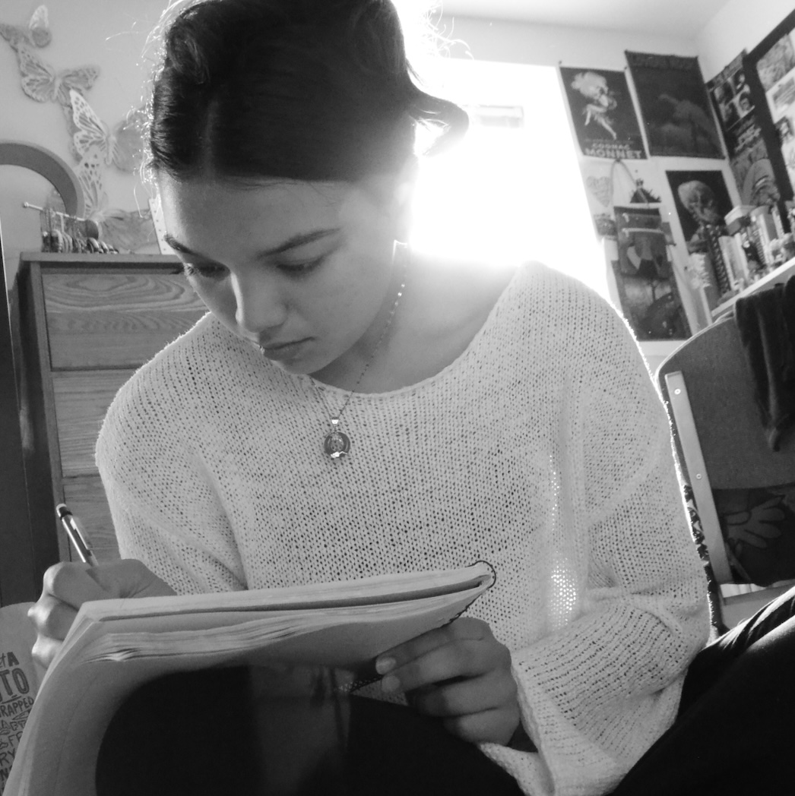
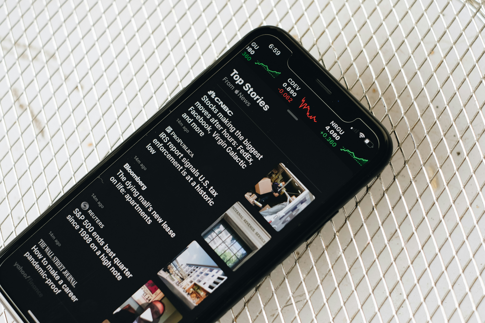
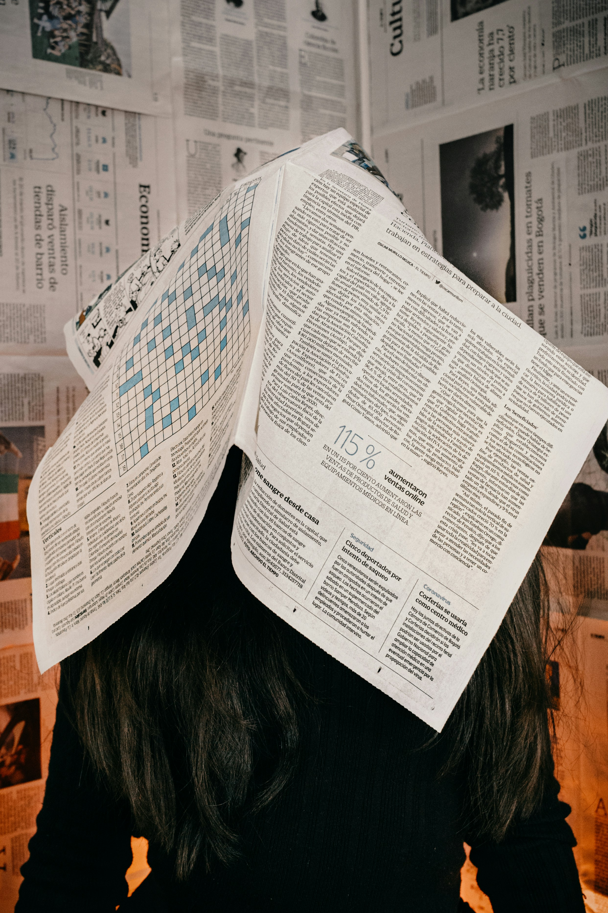

It is 2 a.m., and the story is nowhere near finished.
For many student journalists on campus, that moment is familiar. A draft is open, notifications are streaming in and the deadline is getting closer.
Between classes, internships and constant coverage, student reporters say the workload can quickly become overwhelming.
“I go from class straight into reporting, and then I’m writing late into the night,” said Annabela Mobque, an incoming transfer student from Montgomery Community College, majoring in media production. “It just keeps going, and it’s hard to find a stopping point.”
On a day-to-day basis, student journalists are balancing more than just assignments. They manage full course loads while pitching stories, attending meetings and covering breaking news. This can make reporting more all-consuming than an extracurricular.
“Even if you finish one story, you are already thinking about the next,” Mobque said.

The pressure reflects a broader shift in journalism. With digital platforms and constant updates, reporters are expected to move quickly and be constantly responsive. For students, that expectation can sometimes begin in the classroom.
Mobque says the hardest part is not the work itself, but the feeling that she can’t step away. Missing a deadline or turning down a story can feel like letting others down.
“You don’t want to be the person who can’t handle it,” Mobque said. “You kind of feel like you have to push through.”
“Burnout doesn’t always happen all at once. It can build slowly when you are constantly under stress and not giving yourself time to recover.”
— Amelie Pessoa
This mindset can lead to burnout, especially when combined with the stress of regular academic demands.
Recent research also points to the risk of overscheduling. A University of Georgia study found that taking on too many academic and extracurricular commitments can actually increase stress and anxiety, with little academic benefit.

Amelie Pessoa, a sophomore psychology student and crisis hotline volunteer, said that kind of pressure can build over time.
“Burnout doesn’t always happen all at once,” Pessoa said. “It can build slowly when you are constantly under stress and not giving yourself time to recover.”
Pessoa, who is also involved with the student organization Active Minds at UMD, said students in high-pressure environments, such as journalism, may struggle to recognize when they need help.
“A lot of students normalize being overwhelmed,” she said. “They think it’s just part of being busy, but it can have real effects on your mental health.”
Not all student journalists follow the same path. Some come from other academic fields, bringing different perspectives and challenges.
Laila Michael, an ornamental horticulture student, balances coursework in plant science with journalism focused on agriculture and sustainability.
“I’m not in the journalism school, so I’m learning as I go,” Michael said. “I’m juggling labs and fieldwork, which can be really difficult.”
While her workload differs from that of traditional journalism students, the stress can be just as intense.
“With plant science, you have a lot of hands-on work you can’t put off,” she said. “When you add reporting, it can feel like there are no breaks.”
Because of the stress of her workload, Michael has had to set limits.
“I have to be realistic about what I can take on,” she said. “Sometimes that means saying no.”
Professional journalists are not immune to burnout; in fact, it’s very common. Guidance from the Association of Health Care Journalists warns that chronic overwhelm can show up as a loss of motivation, irritability or feelings of unease for no apparent reason.
The organization recommends recognizing early signs of burnout, limiting constant notifications and building support systems, which could include peers or mental health professionals.
That balance is still a work in progress for many students.
“I love journalism,” Mobque said. “I’m still figuring out how to do it in a way that is sustainable.”
Interactive: What burnout can look like
Click each section to see warning signs and possible ways to respond.
-
Apathy or loss of motivation
Burnout may not always feel dramatic at first. It can show up as apathy, low motivation or a general feeling of being “off.”
What can help: Notice the pattern early and talk to someone before it gets worse.
-
Panic about everything you still have to do
Journalists can feel like no matter what they are working on, there is always something else waiting.
What can help: Write down one thing you can control and accomplish that day.
-
Constant notifications and scrolling
Being reachable all the time can make stress feel constant, especially for reporters following difficult news.
What can help: Limit notifications, choose trusted news sources and set specific times to check updates.
-
Irritability or feeling unusually overwhelmed
Chronic stress can move into burnout when it is not resolved. It may appear as irritability, unease or emotional exhaustion.
What can help: Build a support team of peers, friends, mentors or mental health professionals.
-
Not taking real breaks
Rest is not separate from doing good journalism. Breaks and sleep help protect mental health and improve work.
What can help: Take walks, step away from your computer and treat rest as part of the job.
Source: Guidance and reporting adapted from the Association of Health Care Journalists article “Signs you’re dangerously overwhelmed as a freelancer — and what to do about it,” by Anna Medaris, published Dec. 19, 2025.